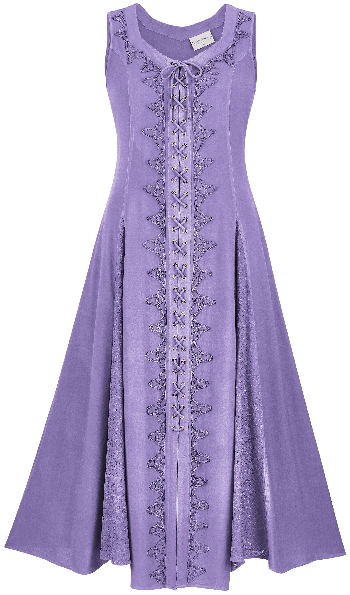
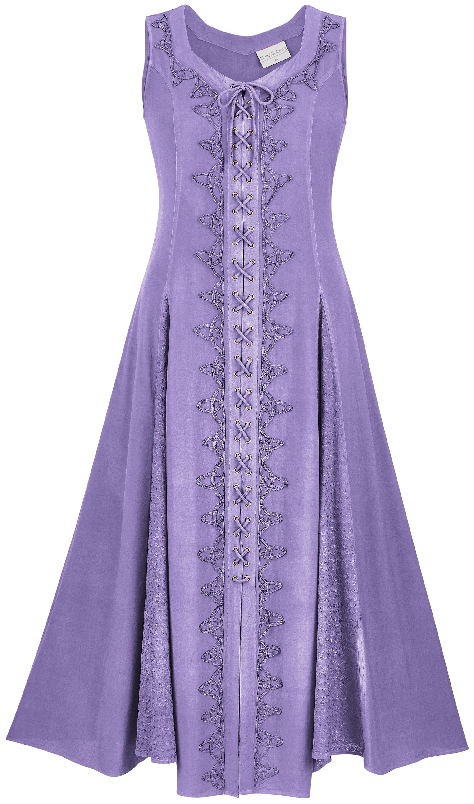

We hope you can make it! We decided to make a decentralized website with detailed info so that everyone can access
this information easily, without needing a facebook account.
We will keep updating this website whenever we have time and when
we get new info!
Don't be surprised if things don't work yet. Please bear with me as I (Ayla) learn html! Some links may not work yet.
If you have any questions, feel free to contact either me or Thomas individually or via our shared email address codergulbrandsen@gmail.com
You are not be expected to buy anything new for the dress code! We just wanted to give examples of the theme in case
you want to wear anything like this
We decided to go with a blend of cocktail-style and formal ballgown/medieval style. For reference, this is similar to what the bridemaids will be wearing:
 

We have ordered three busses, one for pickup between 12:00 pm and 01:00 pm (12:00 and 13:00) and two for drop off after the party.
one of these will leave earlier in the evening around 10:30 pm (22:30), and the other will leave at the end of the night (01:00 am).
6 Feb. 2026 Update!:
We have decided to not charge for the bus or the drinks. The logistics were too complicated. To anyone who hasn't answered via our digital RSVP:
Please let us know either via email or text which bus you want to take (what times) and also where you will be staying. The driver said he can pick people
up from both Larvik and Sandefjord.

We have an idea of what the menu is going to be like, but we haven't made a final decision yet. We want to include some classic Norwegian elements to give everyone a little
taste of Norway. The suggestions from the chef so far include:
Hors d'oeuvres (Thomas calls this fingerfood)
- Lefser with fresh cheese, arugula salad and reindeer sausage.
- Fruit platter
- Popcorn machine
Starter
Creamy green asparagus soup, served with lightly whipped crème fraîche with lemon, parmesan, emulsion, lightly toasted bread croutons,
Parma ham, chili oil and fresh cress.
Main course
Long-roasted beef tenderloin 56c, served with pickled red onion with raspberry vinegar, cauliflower cream, homemade chimichurri (or green pepper sauce),
garlic reduction, lightly grilled heart lettuce and small potatoes with fresh herbs.
Dessert
We haven't decided this yet ;)
Author: Luoise C. Gulbrandsen (mother of the groom)
Here is some practical information for our guests. The ceremony, reception and evening party are all to be held at Asparagus Gården www.Aspargesgården.no.
NB. The wedding ceremony is to take place outside, with an indoor option available in case of unfavourable weather.
Please note that the venue is a converted barn and although it is heated, it would be wise to take a cardigan / jacket / shawl just in case.
1. Where is it and how to get there
Aspargesgården
Østbyveien 75,
3280 Tjodalyng

- The nearest airport to the venue is Torp Airport, 25 minutes away from the venue by car. Shuttle busses from Torp airport run to Sandefjord.
- You can of course fly to Oslo airport if you would like to do some sightseeing in Oslo first. Jan, Louise, Daniel, Thomas, Ayla and Eva and Rod all live less
than an hour from Oslo airport. Oslo airport is 2 ½ hours from the venue by car. You can also catch a train from Oslo airport to the nearest town; Larvik
or to Sandefjord
- Larvik town (and railway station) is 12 minutes away from the venue by car.
- Sandefjord town (and railway station) is 25 minutes away from the venue by car
2. Where to stay
There is no on-site accommodation at the venue. The nearest hotels are in Larvik, about 12–15 minutes away by car, and Sandefjord, about 25–30 minutes away.
You may find an Airbnb closer but we have not located any so far. You can explore accommodations in Larvik and Sandefjord using platforms such as www.booking.com.
Most establishments have yet to release their rates for this period. Currently available prices start at GBP 95 per night for a double room for 2 adults.
Thomas and Ayla are planning to offer a free bus service to/from Larvik – details to come but the bus will probably run to a couple of places in Larvik town
centre. Check Thomas and Ayla’s web page for details.
We have contacted several hotels to inquire about potential discounts for guests booking at the same location. We will let you know if we get a positive answer.
3. Wheather and Climate
The month of May in Norway is unpredictable; it can feel like summer or winter. While snow is unlikely, temperatures can soar to 25°C with sunny skies or drop
close to freezing with rain and chilly weather. The climate data below provides an overview for the area in May. In recent years, the month has been quite warm, so
let’s hope for the best! Check the forecast as your trip approaches and pack accordingly. Remember that the wedding ceremony is to take place outside, with an indoor
option available in case of unfavourable weather. Weather service online: www.yr.no.

4. Other useful information
- You can use credit cards everywhere in Norway so you will probably not need cash at all. On busses and other public transport, you will need to download
an app for the best prices as cash / card are priced at a premium. Ask us if you need help.
- Taxis tend to be expensive, so it's best to agree on a fixed price or get an estimate beforehand. Alternatively, services like Uber or Bolt often
offer more affordable options.
- Thursday 14th May (Ascension Day) is a bank holiday in Norway
- Most stores (including grocery stores) tend to be closed on bank holidays. Get what you need beforehand! Or go to the slightly more expensive shops like
Joker that stay open every day of the year.
- Sunday 17th May marks Norway’s National Day, celebrated with children's parades, music, and festivities across the country, usually in the morning.
Many Norwegians wear traditional national costumes, so we highly recommend staying an extra half a day to experience the celebrations rather than travelling
home on Sunday morning. Whether in Larvik, Sandefjord, or another town, it's a great opportunity to see a special tradition.
17. mai - Larvik kommune,
17. mai - Sandefjord kommune
Looking forward to seeing you on 16th May!
Love Louise and Jan Gulbrandsen
Ringveien 12
1472 Fjellhamar
Familie@gulbrandsen.dk
+47 93 04 77 79
Jan +47 91513068 Louise +47 93047779

Picture of Norwegian school children's parade on the 17th of May

Picture of Norwegian children's marching band on the 17th of May

Picture of Norwegian professional marching band on the 17th of May

Picture of Norwegian women in their traditional national dress called a Bunad